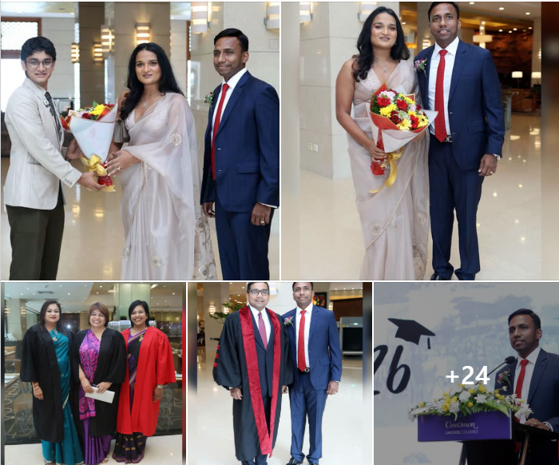

Asian International School proudly celebrated the Graduation Ceremony 2026 at the prestigious Cinnamon Lakeside, marking a significant milestone for the Class of 2026.
The elegant ceremony honored 65 graduating students as they celebrated the successful completion of their academic journey. Surrounded by proud parents, dedicated teachers, family members, and friends, the graduates reflected on years of hard work, perseverance, and remarkable achievements while looking ahead to exciting new opportunities.
The event was filled with inspiring moments, heartfelt speeches, and joyful celebrations, recognizing the graduates dedication and the unwavering support of the AIS community.
Asian International School extends its heartfelt congratulations to the Class of 2026 and wishes every graduate continued success as they embark on the next chapter of their academic and professional journeys. May they continue to uphold the values of excellence, integrity, and lifelong learning wherever their future takes them.
FB - https://www.facebook.com/share/p/196HJf4jyt/
IG 1 -https://www.instagram.com/p/Da2lSNXCCzR/?igsh=cGdscTJhaTNrZWdn
IG 2 -https://www.instagram.com/p/Da2ljtNiBLI/?igsh=MXJ5OTRzZ3J4aGU4cw==